Programming & databases
Python · JavaScript · SQL · R · HTML · CSS · SQLite · SQL Server
DATA · AI · SOFTWARE
I turn data, ideas, and code into useful digital experiences. I’m a Computer Science undergraduate exploring Data Science, Generative AI, cloud computing, and full-stack development.
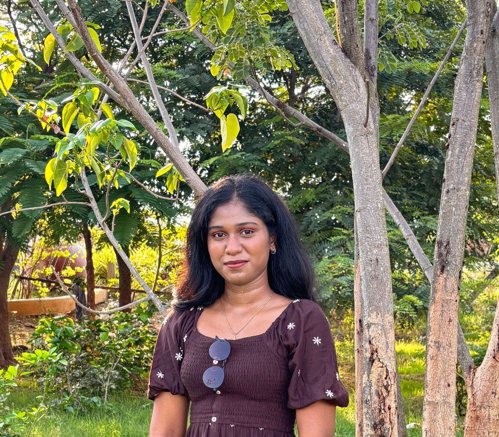
A little about my background, the work I enjoy, and what I’m working toward.
Good technology starts with understanding the problem — then making the solution clear, useful, and reliable.
I’m CHERUKURU INNDHU SREE, a B.Tech Computer Science & Engineering student at Sri Venkateswara College of Engineering, Tirupati, graduating in 2027, with an MBA minor.
My experience spans data preprocessing and exploratory analysis, predictive modelling, responsive web applications, REST APIs, and Python-based tools. I’m especially interested in projects where data and AI can make learning or everyday workflows better.
Outside project work, I’m a Google Student Ambassador and have participated in learning programmes with Infosys Springboard, IBM, and other technology organisations.
A practical toolkit across programming, analytics, AI, and application development.
Python · JavaScript · SQL · R · HTML · CSS · SQLite · SQL Server
Pandas · NumPy · Scikit-learn · EDA · Feature Engineering · Predictive Modelling
Power BI · Matplotlib · Seaborn · Data reporting · Dashboard development
Django · Flask · Node.js · REST APIs · Bootstrap · Responsive UI
Claude AI · Agentic AI concepts · Generative AI · Streamlit · AI-assisted apps
AWS fundamentals · Microsoft Fabric · Hadoop · Big Data Processing · GitHub
A selection of projects from my learning journey. Explore the source code on GitHub.
A responsive task manager built with Django and SQLite. Supports creating, editing, deleting, and completing tasks through a clean interface.
A Flask-based student records app with CRUD operations to add, view, update, and delete student information, backed by SQLite.
An interactive Streamlit learning companion powered by Claude AI, designed to explain Machine Learning fundamentals and generate quizzes for practice.
Applied data preprocessing, exploratory data analysis, and visual reporting to real-world datasets during a Data Science internship.
A full-stack responsive web application developed during an internship, connecting front-end components with backend services through REST APIs.
Analytics and reporting work focused on translating data into understandable visuals and actionable business insights.
Note: individual repository links can be added as each project repository is made public.
Internships and structured programmes that helped me build practical skills.
Preprocessed datasets, explored data with Python libraries, developed predictive models, and communicated findings through analytical reports.
Built responsive web applications, integrated RESTful APIs, and connected front-end components to backend services.
Developed Python web solutions and worked with backend logic, database design, and API integration.
Completed a 120-hour programme covering AI/ML concepts and guided practical projects.
Structured learning in AI, data science, and software development with simulated industry projects.
Technology learning programme covering AI fundamentals and cloud concepts.
Sri Venkateswara College of Engineering, Tirupati
Sep 2023 – May 2027 · MBA Minor
Narayana Junior College
2021 – 2023
Cambridge High School
2021
Google Student Ambassador · 2026
Student engagement, developer tools, and technology awareness
Selected credentials and technical learning from my résumé.
Microsoft · Aug 2026
SmartBridge · AP State Council of Higher Education
Cisco
Microsoft
Microsoft
Infosys Springboard
Job Simulation
Technical learning
NxtWave · Additional learning
Photos from my Google Student Ambassador journey and Infosys Springboard programmes, added to the relevant highlights.
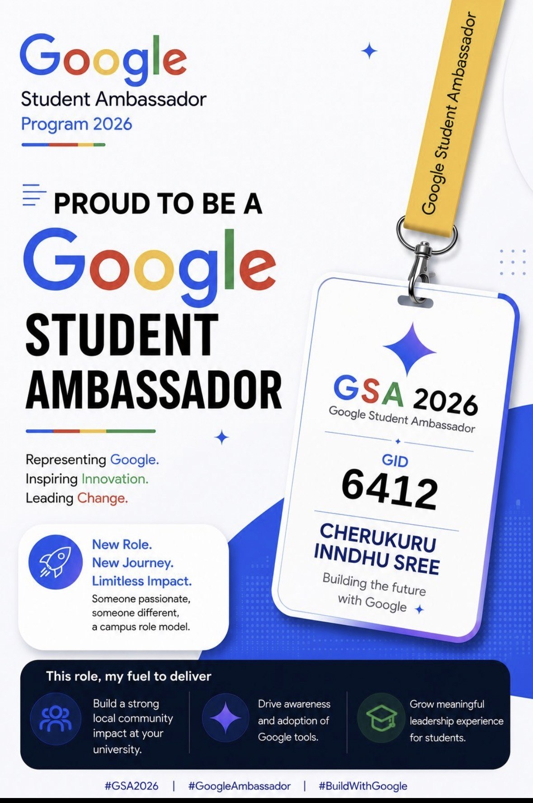
Representing Google on campus, encouraging awareness of Google tools, and building student community impact.
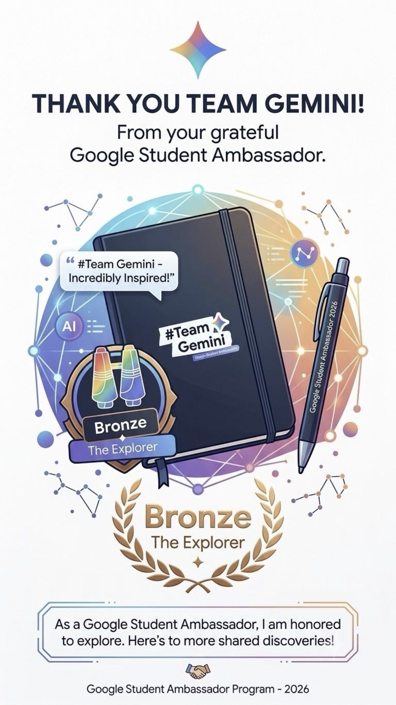
A visual record of the Bronze Explorer milestone shared as part of my Google Student Ambassador journey.
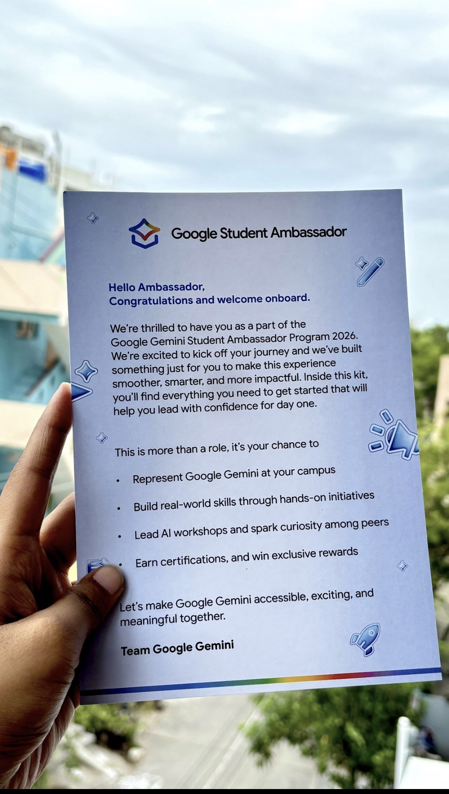
Welcome message outlining campus representation, hands-on initiatives, AI workshops, and student engagement.
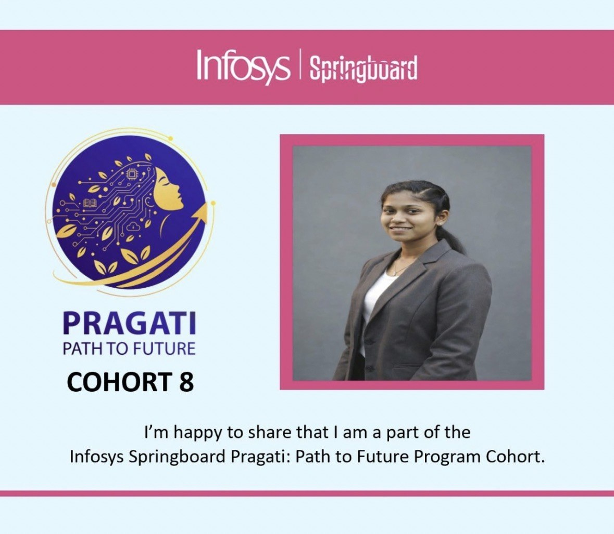
Participation in the Pragati: Path to Future programme focused on upskilling and industry readiness.
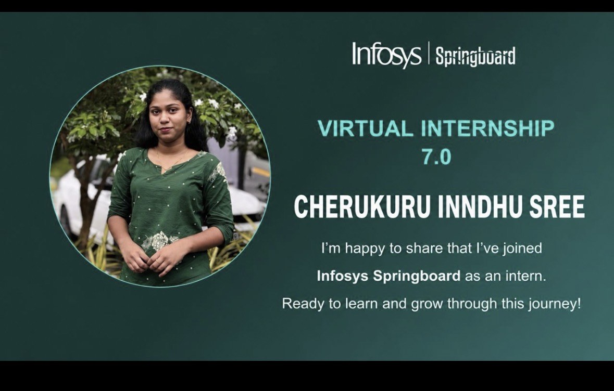
Sharing my participation in Infosys Springboard's virtual internship learning journey.
Real moments from technology events I attended — from the AWS community to CGI’s Future Ready AI Summit. These experiences help me learn from practitioners, explore new ideas, and stay connected to the tech ecosystem.
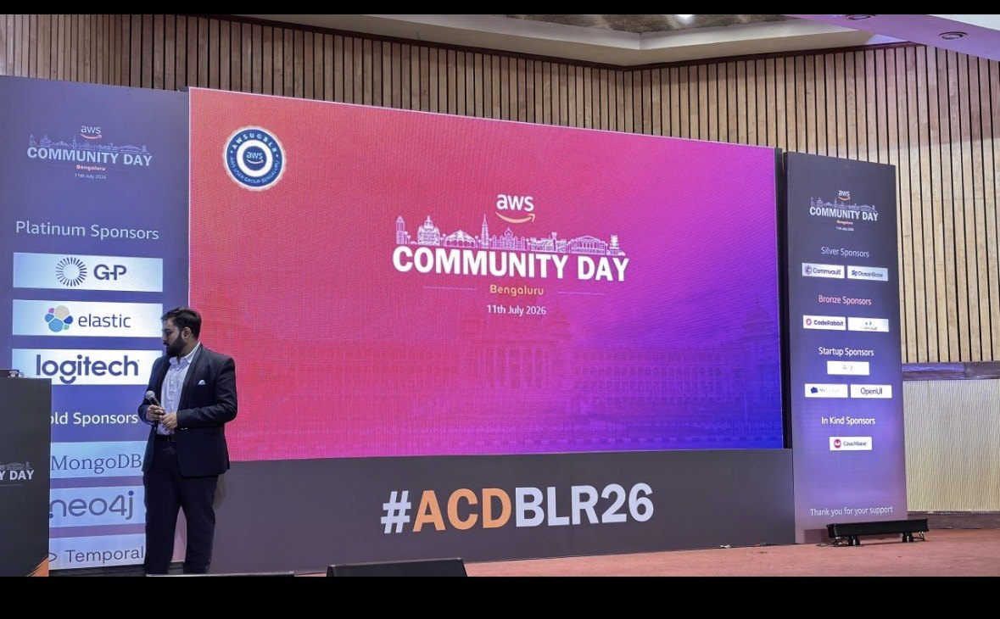
Attended AWS Community Day Bengaluru and experienced talks from the cloud community. A valuable opportunity to learn, connect with fellow technology enthusiasts, and explore the wider AWS ecosystem.
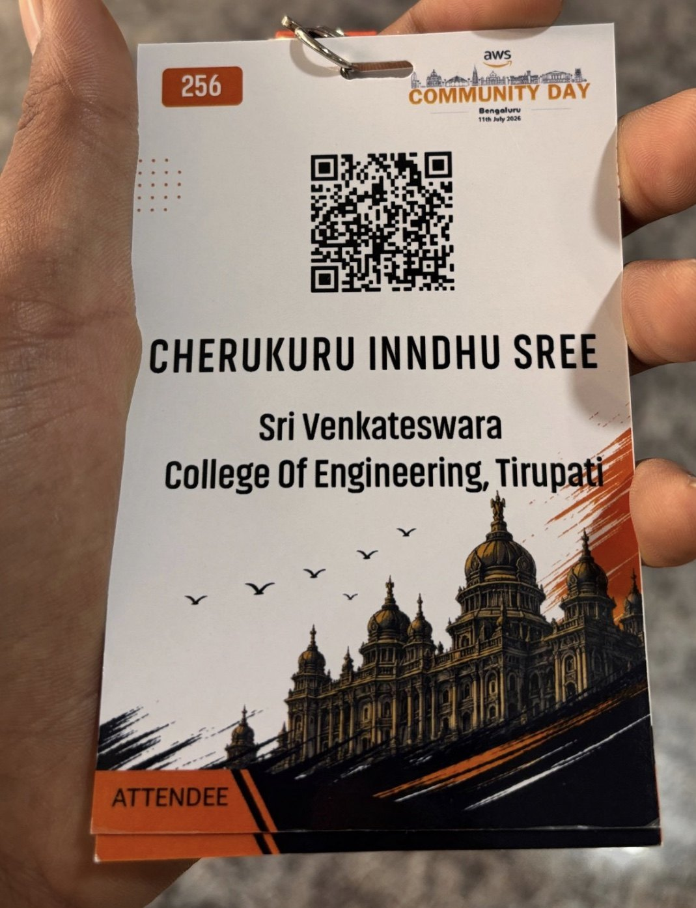
A keepsake from attending AWS Community Day, representing an in-person step into the cloud community.
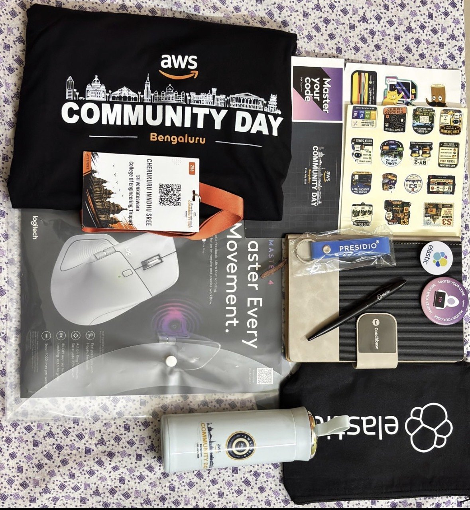
A snapshot of the event goodies and sponsor merchandise collected at the conference, including a tote, stickers, bottle, notebook, and other items visible in the photo.
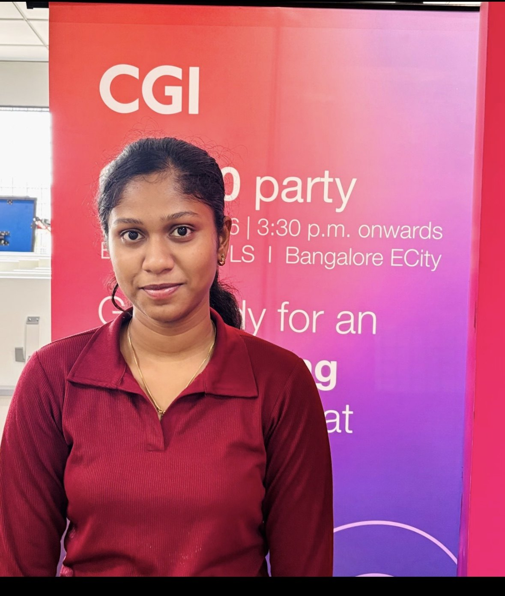
Attended a CGI event and captured a personal moment at the venue. An opportunity to engage with a professional technology event environment.
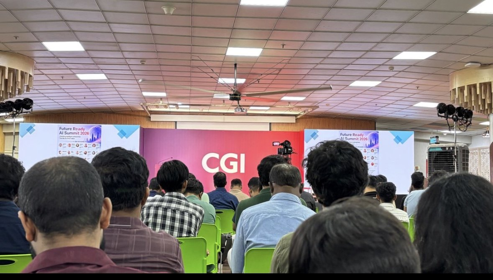
A view of the audience and stage at CGI’s Future Ready AI Summit 2026, reflecting the event’s focus on AI and future-ready technology.
Photos supplied by me from the events I attended. Event details are described only to the extent visible in the photos.
Leadership, recognition, and learning milestones drawn from your résumé and public LinkedIn updates.
Campus engagement, student community activities, and exploration of Google AI and developer tools.
Recognition shared through the Google Student Ambassador programme’s Gemini ecosystem activities.
Women-in-technology upskilling programme, alongside completion of AI EMPOW(H)ER learning.
Presented and shared learning on prompt experimentation, MapReduce, and emerging AI concepts.
I use presentations and peer teaching to make technical concepts easier to understand. These sessions reflect my interest in knowledge sharing, communication, and student leadership.
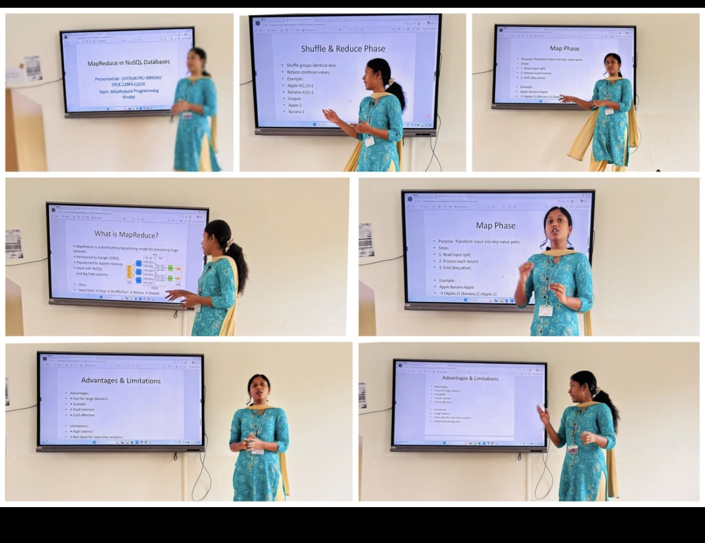
Delivered a classroom presentation explaining MapReduce concepts, including the Map phase, Shuffle and Reduce phase, examples, advantages, and limitations. Teaching the topic to around 70 students gave me an opportunity to practise explaining technical ideas clearly and engaging with an audience.
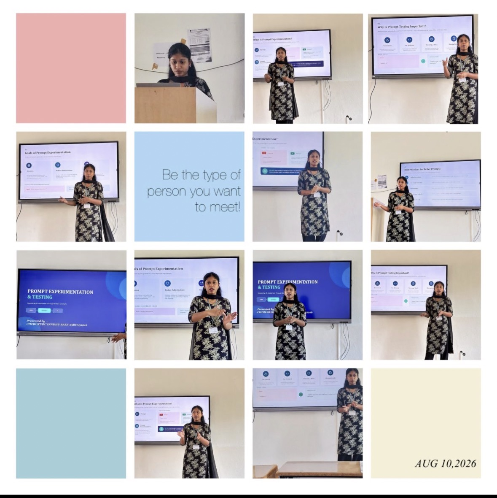
Presented prompt engineering concepts, including prompt experimentation, testing, goals, and better prompt practices. The session reflects my interest in Generative AI and my ability to communicate practical AI concepts to fellow students.
Photos from my presentations. The audience count of approximately 70 students is based on my description of the session.
Interested in entry-level roles, internships, data projects, AI applications, or full-stack collaborations? I’d love to connect.